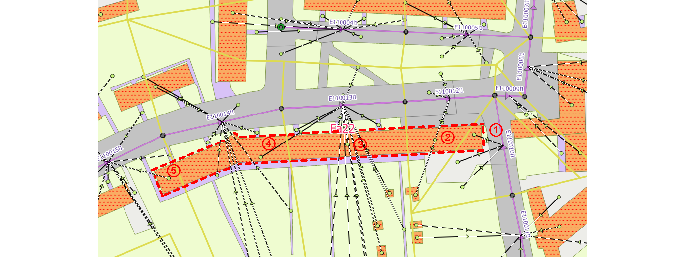

1. Verarbeitung von befestigten und unbefestigten Flächen¶
Abflusswirksame Flächen, z. B. Dachflächen, Parkplätze, Straßen, werden in QKan in der Tabelle “flaechen” verwaltet. Diese werden mit Hilfe des Attributs “abflussparameter” klassifiziert, und in der entsprechenden Tabelle “abflussparameter” sind die für die hydraulische Berechnung benötigten Parameter gespeichert. In dieser Tabelle ist wiederum ein Attribut “bodenklasse” enthalten, das für durchlässige Flächen die Versickerungsparameter enthält. Unbefestigte Flächen sind in QKan dadurch gekennzeichnet, dass entweder keine Bodenklasse oder aber eine Bodenklasse zugeordnet ist, deren Durchlässigkeit 0 ist.
1.1. Zuordnung von Flächen zu Haltungen¶
Die Zuordnung der abflusswirksamen Flächen zu den Haltungen des Kanalnetzes stellt bei der Vorbereitung einer hydrodynamischen Simulation einen aufwändigen Arbeitsschritt dar. Deshalb enthält QKan Funktionen zur automatischen Verknüpfung und zur Plausibilitäskontrolle.

Abbildung: Anbindungen von Flächen an Haltungen
1.2. Grundprinzip¶
Die abflusswirksamen Flächen werden mittels Linien mit den Haltungen verbunden, die von einem Punkt innerhalb der jeweiligen Fläche zur Haltung führen und im Layer “Anbindungen Flächen” (QKan-Tabelle “linkfl”) gespeichert werden. Maßgebend für die Zuordnung der abflusswirksamen Flächen sind diese Verbindungslinien sowie die Haltungsflächen im Layer “Haltungsflächen” (QKan-Tabelle “tezg”).
Es wird unterschieden zwischen Flächen, die als ganzes zugeordnet werden und großen Flächen, die sich über mehrere Haltungsflächen erstrecken und deshalb aufgeteilt werden müssen. Für diese muss der Anwender in der Tabelle “flaechen” das Attribut “aufteilen” aktivieren bzw. “ja” eintragen. In diesem Fall wird für jedes Teilstück, das in einer anderen Haltungsfläche liegt, eine eigene Verbindungslinie angelegt.
Abbildung: Anbindung einer aufgeteilten Fläche

Abbildung: Formular Flächen (hervorgehoben: Attribut “aufteilen”)
Die Verbindungslinien können jederzeit manuell nachbearbeitet, ergänzt oder gelöscht werden. Maßgebend für den Anwender sind ausschließlich die sichtbaren Verbindungslinien!
Der Algorithmus ist so angelegt, dass die abflusswirksamen Flächen nach dem Import aus einem externen Datenbestand während der gesamten Bearbeitung im Original erhalten bleiben. Sie brauchen also nicht vorher durch den Anwender aufgeteilt zu werden. Der Anwender sollte die Flächen lediglich so vorbereiten, dass keine Überschneidungen und “Löcher” mehr vorhanden sind, wozu QGIS mehrere Werkzeuge enthält.
Erst beim Datenexport in das Simulationsprogramm wird die Aufteilung der mit dem Attribut “aufteilen” markierten Flächen mittels Verschneidung mit den Haltungsflächen vorgenommen. Das hat den Vorteil, dass der Anwender jederzeit Änderungen an den Flächen, Haltungsflächen oder Kanalnetzdaten vornehmen kann, um dann erneut die Daten in das Simulationsprogramm zu exportieren.
1.3. Teilgebiete¶
Bei größeren Entwässerungsnetzen ist es hilfreich, die Bearbeitung nacheinander für mehrere Teilgebiete vorzunehmen. In QKan dient dazu ein entsprechender Layer “Teilgebiete” (QKan-Tabelle “teilgebiete”). Alle für die Flächenaufteilung verwendeten Layer enthalten ein entsprechendes Attribut, mit dem die automatische Erzeugung der Verbindungslinien eines oder mehrere ausgewählte Teilgebiete beschränkt werden kann.
2. Vorgehen bei der Flächenzuordnung¶
2.1. Import der abflusswirksamen Flächen¶
Ausgangspunkt für die nachfolgend beschriebenen Arbeitsschritte ist ein bestehendes QKan-Projekt. Empfehlenswert ist es, dieses durch Import aus einem der in QKan verfügbaren Datenformate (HYSTEM-EXTRAN, Kanal++) zu erzeugen. Die entsprechende Datei des Simulationsprogramms sollte bereits Kanaldaten enthalten; es ist aber auch möglich, eine leere Datei zu verwenden, die vorher mit dem gewünschten Simulationsprogramm angelegt wurde.
Die abflusswirksamen Flächen können mit QGIS aus einer Vielzahl von Datenquellen übernommen werden. Empfehlenswert ist es dabei, zunächst die Daten mit QGIS in einen zusätzlichen Layer zu laden. Anschließend können die Flächen mit “Copy & Paste” in den Layer “Flächen” übertragen und der zusätzliche Layer wieder entfernt werden.
2.2. Erzeugen der unbefestigten Flächen¶
In der Regel enthalten die Datenbestände der abflusswirksamen Flächen nur befestigte Flächen. Für die Verarbeitung in QKan ist es empfehlenswert auch für die unbefestigten Flächenanteile entsprechende Flächenobjekte anzulegen. Hierzu dient die Funktion “Erzeuge unbefestigte Flächen...”. Voraussetzung ist, dass im Layer “Haltungsflächen” Flächen vorhanden sind, die das Entwässerungsgebiet in Teilflächen unterteilen, die den einzelnen Haltungen zugeordnet sind. Diese Haltungsflächen beziehen sich ausschließlich auf den Niederschlagsabfluss, so dass bei der Erstellung nur das Mischwasser- und Regenwassernetz zu berücksichtigen ist.
Die Haltungsflächen enthalten folgende Attribute, die bei der Erzeugung der unbefestigten Flächen übernommen werden, und deshalb vorher entsprechend bearbeitet werden sollten (aber nicht müssen):
- regenschreiber
- neigkl
- abflussparameter
- haltnam
- teilgebiet
Teilgebiete dienen ausschließlich dazu, die Bearbeitung auf einen Teilbereich eines Gesamtprojektes zu beschränken, um einen besseren Überblick über den Bearbeitungsfortgang zu behalten. Außerdem beeinflusst die zu bearbeitende Anzahl an Objekten bei einigen Funktionen die Laufzeit. Näheres hierzu siehe Details zu Teilgebieten
2.3. Erzeugen von Anbindungen zwischen Flächen und Haltungen¶
Vor dem Datentransfer in ein Simulationsprogramm wird durch QKan eine “Bereinigung” durchgeführt, bei der die Verbindungslinien in interne Zuordnungsspalten übertragen werden, die wie ein Cache wirken und eine erhebliche Beschleunigung bei der Verarbeitung bewirken.